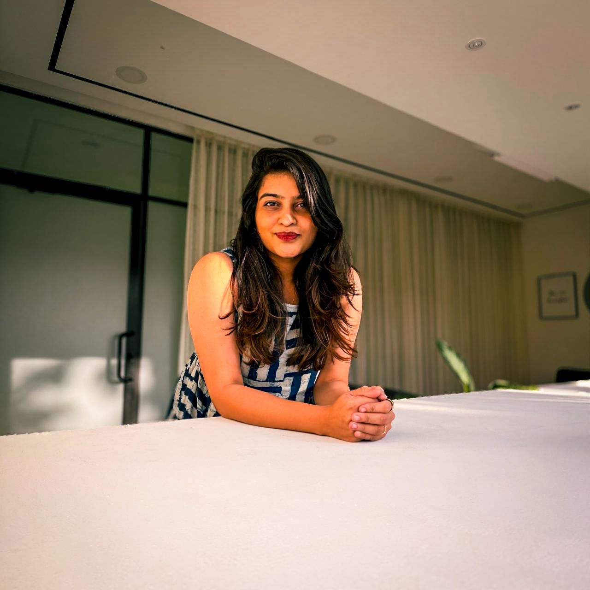

Recognise recurring patterns
Understand how communication, emotional responses and expectations reinforce the difficulties you are experiencing.
A relationship can matter deeply and still become difficult to navigate. When conversations repeat, trust feels uncertain, or distance grows, it can help to look beyond the immediate disagreement and understand the pattern underneath it.
At Pure Harmony, that work begins with a considered conversation with Ashwini Rao, counselling psychologist and founder.

Marriage counselling is not about assigning fault. It is about understanding the emotional and relational patterns that keep two people stuck, and working with them carefully.
The same disagreement can be about very different things: feeling unheard, a breach of trust, competing expectations, or years of unspoken resentment. Effective counselling makes room to understand what is actually happening.
Understand how communication, emotional responses and expectations reinforce the difficulties you are experiencing.
Explore each partner's perspective without reducing the relationship to a question of who is right or wrong.
Identify practical ways to communicate, establish boundaries and make decisions with greater understanding.
Counselling psychologist. Founder of Pure Harmony.
Ashwini works with couples, individuals and families navigating relationship concerns and important emotional transitions. Her approach is calm, thoughtful and non-judgemental, with attention to the context in which each person and relationship exists.
She holds an M.Phil. in Psychology and has over eight years of experience. Her work includes marriage and relationship concerns, communication difficulties, trust issues and self-esteem concerns.
The aim is not to offer quick verdicts or prescribe a single answer. It is to understand the situation with care and help you consider the next steps with greater clarity.
For many couples in India, relationship concerns are closely connected to family structures, cultural expectations, work and the responsibilities of everyday life. These realities deserve to be understood, not dismissed.
Negotiating boundaries, roles, responsibilities and the expectations of an extended family.
Understanding why conversations become conflict, withdrawal or silence, and what may help shift that pattern.
Making sense of hurt, uncertainty and changes in the relationship, including what rebuilding trust may involve.
Exploring the pressure that competing demands, transitions and unequal expectations can place on a partnership.
You do not need to arrive with a diagnosis of the relationship or a complete account of what has happened. The first conversation is an opportunity to understand your concerns and discuss whether counselling is an appropriate next step.
Contact the practice to enquire about availability, session format and the concerns you would like support with.
Use the first session to discuss the situation, relevant history and what you hope to work towards.
Discuss the focus of the work and whether continuing counselling feels suitable for your needs.
If you are considering marriage counselling, you can enquire about an appointment with Ashwini Rao and learn more about the process, availability and session format.
Enquire about an appointment ↗